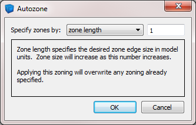
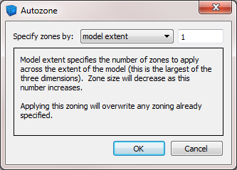
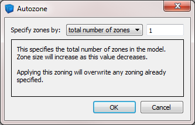

自动划分网格单元
自动划分网格单元工具按钮（ ）会显示一个对话框，其中包含在模型中自动分布网格单元的选项。
）会显示一个对话框，其中包含在模型中自动分布网格单元的选项。
按网格单元长度：


按模型尺寸：


按网格单元总数：


| 这些内容对您有帮助吗？… | FLAC3D © 2019, Itasca | 原文更新于 2020 年 10 月 8 日 |
自动划分网格单元工具按钮（）会显示一个对话框，其中包含在模型中自动分布网格单元的选项。
按网格单元长度：

按模型尺寸：

按网格单元总数：

| 这些内容对您有帮助吗？… | FLAC3D © 2019, Itasca | 原文更新于 2020 年 10 月 8 日 |